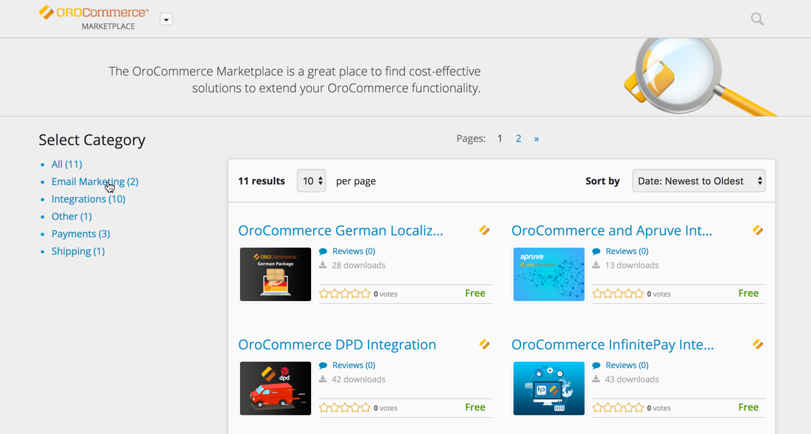
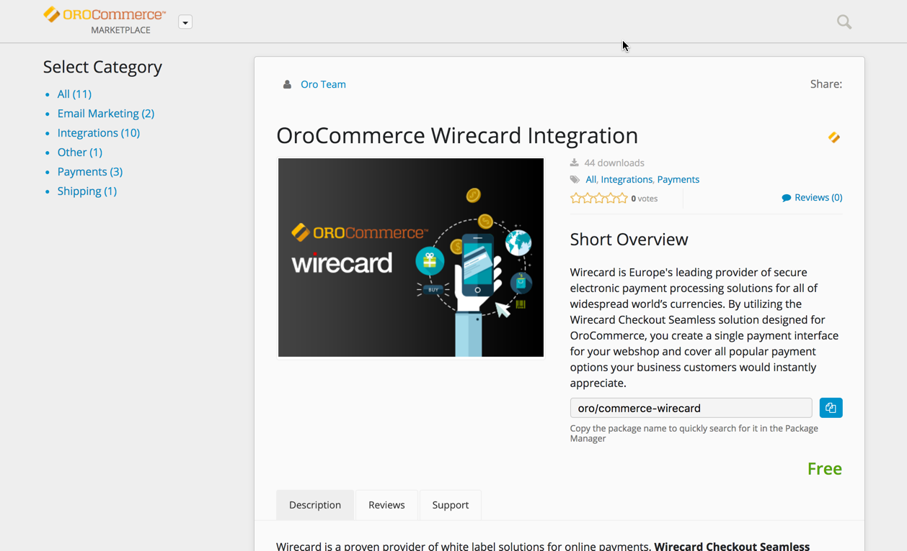
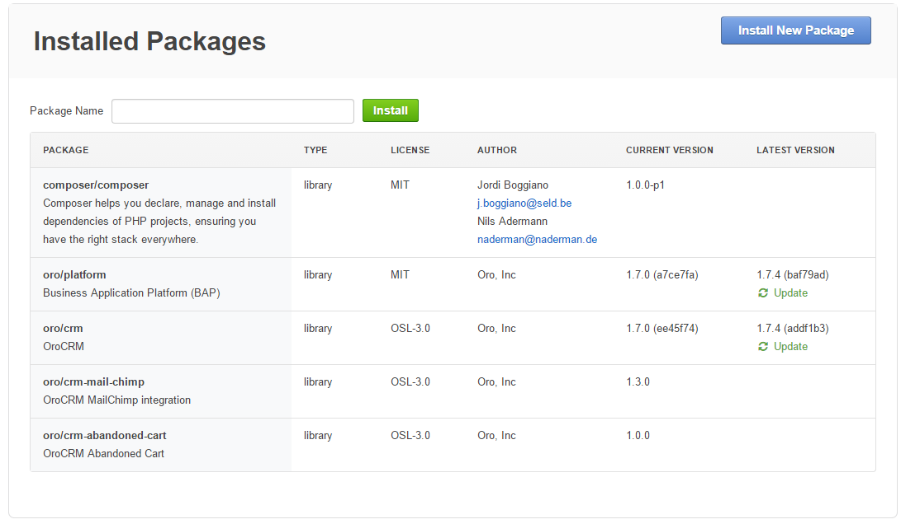
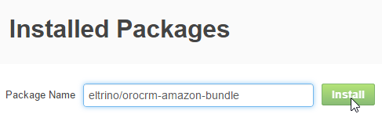

Extensions are additional modules that can be added to the Oro application to enable new features (integrations, capabilities, etc.).
All the OroCommerce extensions are available in the OroCommerce Marketplace
Click the link with the extension name to see its detailed description.
Below the short overview, there is a package name that you will use to add this extension to your OroCommerce instance.
Lower, you can see detailed description, release notes, reviews, as well as information about previous versions (if any).
To add an extension, navigate to System > Package Manager in the main menu.
The Installed Packages page opens.
You can see details of all the packages currently available in the system. If a newer version of the extension is available, the Update link shows up in the LATEST VERSION column.
To add a new extension:
Enter the package name in the Package Name field in the top left part of the page, and click the Install button.

Confirm the package installation. Uncheck the Load demo data box, if you do not need the demo data. Click Continue.
When installation is over, the package will be added to the Installed Packages list. Relevant processes and entities are added to the system and the extended functionality can be used.